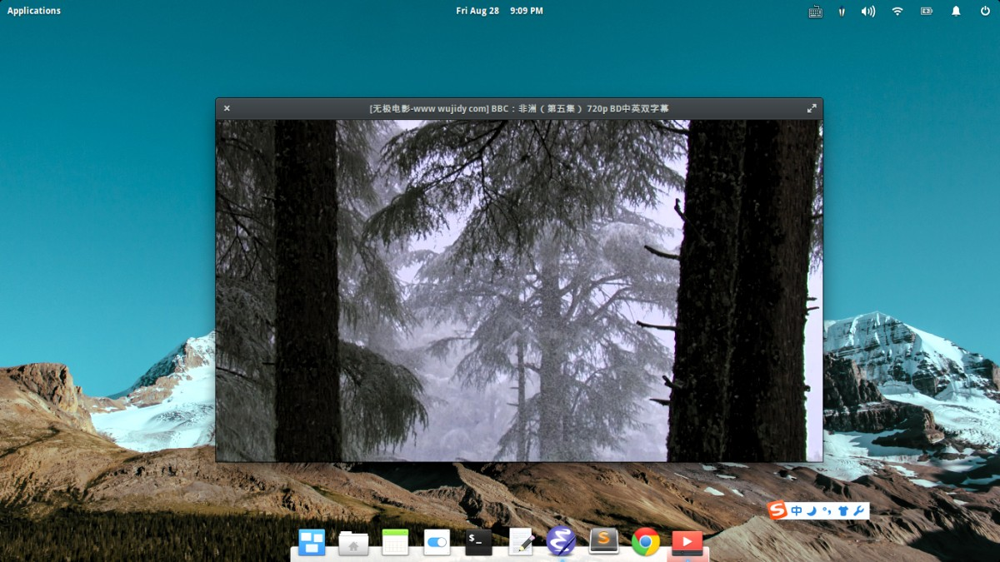

安装ElementaryOS Freya后的配置
Elementary据说是颜值最高的Linux发行版。刚好屋子里有一个笔记本暂时闲置在那里。于是就拿来折腾安装了ElementaryOS Freya。配置使用了之后，发现还挺不错的。不过针对果然的使用习惯还是有很多地方需要配置的。本文记录了我的ElementaryOS过程。
Table of Contents
eOS截图

选择阿里云的源
按住Alt+F2，搜Software & Updates，选择软件源到阿里云的源，速度会快上很多。接着就是标准的 sudo apt-get update 和 sudo apt-get upgrade 了。
或者下载Lantern代理，在命令行设置http代理，也能无障碍的update & upgrade
export http_proxy=http://127.0.0.1:8787
安装受版权限制的软件
有很多包由于版权的限制，不能集成在系统里发行。包括一些第三方的解码器，微软的TrueType字体，java等。这些包是放在源里可以安装的，在Software & Updates里可以看到有一项源叫做 Software restricted by copyright or legal issues 。这些包可以通过下面这个命令安装。
sudo apt-get install ubuntu-restricted-extras
安装系统监控器
系统监控器是gnome套件中的一个好用的系统资源使用情况查看器。推荐使用。
sudo apt-get install gnome-system-monitor
参考
用户脚本目录.usrbin
在 ~/ 目录下面，创建一个.usrbin文件夹，并且在 ~/.profile 里把它放置到PATH的最前面。
export $PATH=$HOME/.usrbin:$PATH
执行命令 source ~/.profile 使改动立即生效。
里面可以放一些你自己写的shell脚本、python脚本等，还可以用同名的命令覆盖系统命令，比如emacs，sublime，在修改emacs启动闪退，sublime中文支持上面很方便。
例如，用scratch创建一个text文件 scratch-text-editor ~/.usrbin/text, 其中，内容如下
#!/bin/bash GTK_IM_MODULE="xim" exec /usr/bin/scratch-text-editor "$@"
然后，用chmod添加可执行的属性， chmod +x ~/.usrbin/text
现在就可以在命令行下面，使用text打开scratch了，会方便很多。同时，前缀GTK_IM_MODULE="xim"是使scratch支持中文输入法。
改主机名称
装系统的时候，脑子一抽把主机名子起的特别难听。在命令行下面不好看，后来专门去网搜了一下怎么改主机名，把方法在这记录一下。
先执行命令 sudo text /etc/hostname ,文件里面存储的是旧的计算机名字，把它改为你想要的名字。我给改成了eOS。保存。
运行命令 sudo gedit /etc/hosts ，里面的内容大概如下。更改127.0.1.1位置的值，使它跟你刚才输入的计算机名字相符，完成后保存文件。
127.0.0.1 localhost 127.0.1.1 eOS
重启后，机器就会显示新的名字了。
参考：
安装gdebi工具
debi是一个包安装工具，图形化的界面，所以使用很方便，强烈建议安装。
sudo apt-get install debi
安装Emacs24.5
emacs最新的24.5没有deb包，只能从源码安装了。下载最新的24.5的tar.xz包 http://ftpmirror.gnu.org/emacs/
在下载emacs源码的过程中，可以安装其他需要用到的工具。
sudo apt-get install checkinstall sudo apt-get install build-essential sudo apt-get build-dep emacs24
下载文件为emacs-24.5.tar.xz。邮件Extract Here，进入该文件夹再邮件 Open In -> Terminal。依次执行以下命令。
./configure --prefix=/usr make checkinstall
其中，–prefix参数是指定emacs安装的目录。我习惯安装在usr目录，而不是默认的/usr/local目录。checkinstall命令是将编译好的emacs打包成deb包，然后用户再用gdebi安装，这样的好处是，可以方便的用apt-get去卸载。如果直接make install的话，还需要保留源码才能再需要卸载的时候卸载掉。
我的机器是x86的，我已经打包好了一个x86版本的deb包，可以去百度云盘上下载安装。
参考:
安装Atom
Atom没有提供x86版本的deb包，但是确实是支持x86的。64位版本的deb包在Atom的官网就可以下载。32位的机器可以用PPA下载安装。
32位和64位的机器都可以使用PPA安装，命令如下：
sudo add-apt-repository ppa:webupd8team/atom sudo apt-get update sudo apt-get install atom
64位的电脑可以去官方网站上下载安装包： https://atom.io/ ，然后，直接用debi打开就可以安装了。
安装Sublime Text 3
去官方网站 下载Sublime 的deb安装包，右键用gdebi打开。点击 Install Package就可以了。
在ElementaryOS Freya上，安装的Sublime Text 3是没办法输入中文的。想要支持中文还需要配置一下，后面有说明如何配置的。
安装StarUML
StartUML是原作者近期开发的新的UML画图软件，保留了之前的强大功能的基础上，增加了更多功能和支持了多个操作系统。虽然是收费的软件，但是无限期试用的。只不过会隔一段时间弹出来一个提示框让你购买而已。个人觉得作者还是挺厚道的，这里就不连接到下载页面了，大家去官网找下载入口吧。

- 官方网址：http://staruml.io/
安装SmartGit
SmartGit是一个跨linux、win、mac三个平台的git版本控制软件。用习惯了的话，非常好用。可以免费用于非商业用途。
安装通过去官网下载deb安装包，然后使用debi安装即可。官网的下载可能会比较慢，需要耐心等待或者Lantern一下。
参考：
安装Elementary Tweaks
Elementary Tweaks是eOS上一个增强配置的工具。可以个性化的定制自己的eOS，包括修改UI和窗口按钮布局，修改主题，修改icon，修改文件管理器的单双击等。
Freya安装Elementary Tweaks可以通过PPA安装：
sudo add-apt-repository ppa:mpstark/elementary-tweaks-daily sudo apt-get update sudo apt-get install elementary-tweaks
参考：
安装oracle-jdk
自带的源里带的是open-jdk。如果想安装oracle就得用ppa源安装，这是最简单的方法了。
sudo apt-add-repository ppa:webupd8team/java sudo apt-get update sudo apt-get install oracle-java8-installer
安装IntelliJ-IDEA
去官网下载tar.sz包，选择社区版。社区版本可以免费用于非商业用途，作为个人试用基本够了。如果是公司试用的话，公司会去购买的。
解压后放在合适的位置，比如/usr/share里，然后进入ideaC/bin目录，运行idea.sh。运行后，可以在Tools里找到Create Desktop Shortcut就能在菜单里找到了。
同样，也可以安装Pycharm。下载过程中会有网速限制，建议直接Lantern一下。
安装Google Chrome
可以去官网下载deb包安装 https://www.google.com/intl/en-US/chrome/browser/ 下载后用gdebi安装即可。
注意，chromium可以直接在软件中心安装，但是chromium和google chrome是有区别的，从用户角度则是图标不一样，不需要安装falsh插件等等。安装chromium可以直接命令行安装。
启动时出现两个chrome图标问题 : 在/usr/share/applications/google-stable.desktop中添加一项 StartupWMClass=Google-chrome-stable 之后，再启动chrome浏览器Dock栏就不会出现连个chrome图标了。
参考：
安装Lantern
Lantern是一个p2p网络代理软件，主旨是所有人都可以自由的访问互联网，她的前提是基于大部分被禁止访问的网址并不是因为他们的内容非法，比如技术类的网站。
去这里下载你的系统对应的版本，然后安装就可以了。Ubuntu下用gdebi安装，就能使用了。 https://github.com/getlantern/lantern/releases/tag/latest
在命令行下面指定apt-get使用代理，还要执行一个命令。 export http_proxy=http:127.0.0.1:8787
我上外网主要是看一些技术的文章和下载一些技术软件，所以基本满足需求了。至于政治那么高端的东西，我个人觉得我的智商还判断不了外网那些新闻短片的真假性，所以从来不看。
安装搜狗输入法
先要删除系统自带的ibus输入法 sudo apt-get remove ibus 下载官网的输入法安装包，用debi打开安装就可以了。我是重启后才能正常使用，不知道是不是都需要这样。
Atom支持中文显示
在设置（packages->Setting View->Open 或者 Ctrl+,）的font-family里填下面的字体，注意要加最后的分号。下面的字体是系统自带的，可以改成你喜好的字体，我用的是从拷贝过来的Consolas和Yahei字体 Droid Sans Mono, Droid Sans Fallback; , 网上还有一些免费的中文字体，大家可以选用。
字体：
Sublime支持中文输入
进入到我们的usrbin目 cd ~/.usrbin, 添加文件subl_im.c，代码如下：
#include <gtk/gtkimcontext.h> void gtk_im_context_set_client_window(GtkIMContext *context, GdkWindow *window) { GtkIMContextClass *klass; g_return_if_fail (GTK_IS_IM_CONTEXT (context)); klass = GTK_IM_CONTEXT_GET_CLASS (context); if (klass->set_client_window) klass->set_client_window (context, window); g_object_set_data(G_OBJECT(context),"window",window); if (!GDK_IS_WINDOW(window)) return; int width = gdk_window_get_width(window); int height = gdk_window_get_height(window); if (width != 0 && height != 0) gtk_im_context_focus_in(context); }
安装gtk2.0的开发包 sudo apt-get install libgtk2.0-dev 执行编译命令
gcc -shared -o libsubl-im.so subl_im.c `pkg-config --libs --cflags gtk+-2.0` -fPIC
创建subl文件， text ~/.usrbin/subl
#!/usr/bin/env python import sys import os import subprocess def run(): exe = "/opt/sublime_text/sublime_text" cwd = os.getcwd() cmd = [exe] if len(sys.argv) >= 2: path = sys.argv[1] if path.startswith("file"): path = path[5:] if not os.path.isabs(path): path = os.path.join(os.getcwd(), path) cmd = [exe, path] env = dict(os.environ) env['LD_PRELOAD'] = os.path.expanduser('~/.usrbin/libsubl-im.so') subprocess.Popen(cmd, env=env) run()
修改文件使其可以执行 sudo chmod +x sublime_text
用Launcher Manager修改subl的desktop文件，/opt/sublime_text/sublime_text %F 改为subl %F
现在不管是在命令行，还是菜单中进入，都可以输入中文了。
Scratch支持中文输入
在.usrbin目录下创建scratch-text-editor
#!/usr/bin/env python import sys import os import subprocess def run(): exe = "/usr/bin/scratch-text-editor" cwd = os.getcwd() cmd = [exe] if len(sys.argv) >= 2: path = sys.argv[1] if path.startswith("file"): path = path[5:] if not os.path.isabs(path): path = os.path.join(os.getcwd(), path) cmd = [exe, path] env = dict(os.environ) env['GTK_IM_MODULE'] = "xim" subprocess.Popen(cmd, env=env) run()
然后再chmod一下，添加可执行权限 chmod +x scratch-text-editor
Emacs中文输入和闪退问题
在usrbin目录下创emacs文件 内容改为
#!/usr/bin/env python import sys import os import subprocess def run(): exe = "/usr/bin/emacs" cwd = os.getcwd() cmd = [exe] if len(sys.argv) >= 2: path = sys.argv[1] if path.startswith("file"): path = path[5:] if not os.path.isabs(path): path = os.path.join(os.getcwd(), path) cmd = [exe, path] env = dict(os.environ) env['XLIB_SKIP_ARGB_VISUALS'] = '1' env['LC_CTYPE'] = 'zh_CN.UTF-8' subprocess.Popen(cmd, env=env) run()
用Launcher Manager修改emacs的Exec为emacs %F。如果在Launchaer Manager找不到emacs的图标，就去/usr/share/applications下找emacs24.desktop这个文件，直接sudo修改这个文件的Exec那一行，Exec=emacs %F。
[Desktop Entry] Version=1.0 Name=GNU Emacs 24 GenericName=Text Editor Comment=View and edit files MimeType=text/english;text/plain;text/x-makefile;text/x-c++hdr;text/x-c++src;text/x-chdr;text/x-csrc;text/x-java;text/x-moc;text/x-pascal;text/x-tcl;text/x-tex;application/x-shellscript;text/x-c;text/x-c++; Exec=emacs %F TryExec=emacs Icon=/usr/share/icons/hicolor/scalable/apps/emacs24.svg Type=Application Terminal=false Categories=Utility;Development;TextEditor; StartupWMClass=Emacs24
ElementaryOS桌面卡死
按快捷键 Ctrl+Alt+F1 进入tty1，输入命令 sudo service lightdm restart, 这是会进入到登陆界面，但是之前的工作都丢失了。
这两天频繁遇到卡死的问题，网上没有找到解决方法。重新选了显卡驱动也没有解决，后面如果解决了跟进记录在这里。